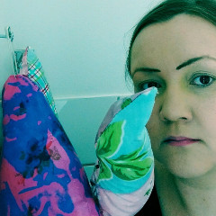

Laura Kärki tunnetaan kuvataiteen monitaiteilijana, joka tekee teoksia laajasti eri materiaaleja, tekniikoita monipuolisesti ja ennakkoluulottomasti hyödyntäen. Viimeaikaisissa teoksissaan vuonna 2020 hän on pohtinut mm. perhesuhteita ja ulkosuomalaisuutta öljypastellimaalausten, tekstiiliprinttien, keramiikan ja valokuvan keinoin. Kärki myös kirjoittaa runoja ja lisää teoksiin äänimaailmoja.
Kärki on asunut viimeiset kymmenen vuotta Berliinissä. Asuttuaan pitkään Saksassa, hän uskaltaa tarttua henkilökohtaisiin aiheisiin, jotka koskettavat laajemmin yleisöä ja joissa näkyy suomalaisen identiteetin peilautumista. Kärki kirjoittaa työskentelystään: Olen jatkuvasti taiteessani, ehkä elämässäni kuin nuorallatanssija, mutta en koskaan tipu - se tekee työstäni rohkeaa. Se tekee siitä syvää, niin toivon, rohkeutta haluan välittää katsojalle.
Kärki on valmistunut vuonna 2006 Aalto-yliopistosta taiteen maisteriksi. Hänen teoksiaan on hankittu viimeisten vuosien aikana taidemuseoiden kokoelmiin, kuten Aineen Taidemuseoon ja Lahden taidemuseoon, sekä hänen töitään kuuluu yksityisiin kokoelmiin. Suomen Valtion taidekokoelmiin kuuluu Kärjen ääni-installaatio. Hänen julkiset teoksensa ovat esillä Suomen Messukeskuksessa, Hotelli Hiltonissa Hakaniemessä, Helsingissä ja Borenius & Kemppisen asianajotoimistossa.
Kärkeä edustaa Suomessa Veikko Halmetoja johtamassaan Gallery Halmetojassa. Kärjen teoksia nähtiin Koreassa kahdessa eri näyttelyssä vuonna 2020. Hänen viimeisin näyttelynsä Suomessa, Punnittu esitys, oli Galleria Halmetojassa tammikuussa 2019. Family Affrairs näyttely avautuu Berliinin Kulturhaus Karlshorstissa vuoden 2021 tammikuussa. Näyttely toteutetaan duona Niina Lehtonen-Braunin kanssa. Näyttelyn kuraattori on Dr.Sylvia Metz ja näyttelyä tukee Suomen-Saksan instituutti.
Teen sanaa, kuvaa ja ääntä. Työskentelen monipuolisesti osaamiskenttieni parissa ja teen eri materiaaleista koostuvia installaatioita, runoja ja ääniteoksia. Lisäksi olen vielä käsityöläinen ja annan eri tekniikoiden näkyä teoksissani.
Käsittelen teoksissani ulkopuolisuuden tunteita, yksinäisyyttä sekä irrallisuuden kokemuksia suhteessa toisiin ihmisiin. Tällä hetkellä työskentelen nykyperheen viitekehyksen parissa ja valmistelen vuosien 2021 ja 2022 näyttelyitä, joita esittelen niin Suomessa kuin Saksassa.
Viime vuosina olen työskennellyt useiden ääni-installaatioiden parissa, kirjoittanut runoja sekä tehnyt veistoksia eri materiaaleista. Teoksissani yhdistelen näitä eri elementtejä toisiinsa.
Jo useamman vuoden ajan olen käsitellyt teoksissani kiirettä ja sen vaikutusta ihmiseen ja hänen lähiympäristöönsä. Kiireisen arjen hahmottaminen on syventynyt seuraavan kysymyksen äärelle: Milloin läsnäolo muuttuu poissaoloksi? Tuon kysymyksen kautta olen pohtinut muun muassa sitä, kuinka läsnäolemisen tasot horjuvat niin helposti, sillä ympäröivä elämämme on niin pirstaleista. Kiiireisen arjen keskellä on vaara, että sitä muuttuu välinpitämättömäksi. Lähellä olevat merkitykselliset ja arvokkaat asiat jäävät arkisen kiireen alle. Kun läsnäolo muuttuu poissaoloksi, missä ihminen tuolloin oikeastaan on?
Työskentelyprosessini kaari ideasta valmiiksi teokseksi saattaa kestää useita vuosia. Hidas kypsyminen on mielenkiintoista, vaikkakin haastelleista, sillä ympäröivä todellisuutemme on erittäin pirstaleista.
Uudet teokseni ovat sisällöllisesti jatkumoa aikaisemmille töilleni, joissa on kokemuksia kiireen läsnäolosta. Olen käsitellyt teoksissani ulkopuolisuuden tunteita, yksinäisyyttä, sekä irrallisuuden kokemuksia suhteessa toisiin ihmisiin.
Työskentelen Berliinissä, Lahdessa, Helsingissä sekä taiteilijaresidensseissä ulkomailla. Valmistelen parhaillaan tulevien vuosien näyttelyitä.
Laura Kärki tekee kuvaa, sanaa ja ääntä. Hän on omien teosten kuvataiteilija, runoilija ja äänisuunnittelija. Tämän ohella hän on vielä käsityöläinen, joka antaa tekniikan ja tekemisen näkyä teoksissa, olla osa niitä.
Monipuolisuus on vahvuus. Kärki hakee taiteellista linjaansa sisällöstä ei estetiikasta. Hänellä on ensin sisältö, sen jälkeen materiaalit ja lopulta muoto. Hänen teoksensa syntyvät tekniikalla, joka parhaiten tukee teoksen sisältöä. Muoto ei jää kuitenkaan sisällön varjoon. Hyvin valitut materiaalit ja tekniikat pääsevät oikeuksiinsa, kun ne ovat sopusoinnussa sisällön kanssa. Hinta, jonka Kärki tästä maksaa, on selkeiden visuaalisten tunnusmerkkien puute.
Se vaikeuttaa taiteilijabrändin luomista, mutta parantaa uskottavuutta. Hänen valitsemallaan tiellä teokset puhuvat puolestaan, ja hänelle itselleen jää aikaa ajatteluun ja sisältöjen syventämiseen.
Kärki on sekä keramiikka- että tekstiilialan ammattilainen, joka hyödyntää ammattitaitoaan teoksissa. Hän ompelee veistoksia, toistaa esinekoosteet keramiikkana ja tekee jopa kangasprinttiveistoksia asiakkaiden omista kuvista.
Pilleripäivät (2010) on keramiikkaa. Siinä ehkäisypilleripakkaukset on valmistettu perinteisestä designmateriaalista. Ristiriita on herkullinen erityisesti siksi, että teos on hyvin kaunis. Materiaalivalinnalla arkisesta mutta ristiriitaista arvosisältöä kantavasta esineestä on tullut kiinnostava kannanotto.
Stressipallot (2011) ovat suuria mustia tyynyjä. Ne ovat muotoon ommeltuja lempeitä kummajaisia. Stressipallot ojentavat lukuisia käsiään katsojaa kohden. Pyytävätkö vai tarjoavatko ne apua, jää kysymykseksi?
Miksei kukaan leiki mun kanssa? (2011) on surullinen pieni veistos, jossa yhdistyvät useat Kärjen käyttämät tekniikat. Kangasprintistä ommeltu teos pitää sisällään myös äänimaiseman. Kuvan pikkutyttö on Kärki itse, mutta se ei lopulta ole merkityksellistä. Teos kuvittaa lasten yksinäisyyden kokemuksia yleisellä ja tunnistettavalla tavalla.
Kärjen teoksia yhdistää vierauden ja ulkopuolisuuden teemat. Yksinäisyys, kiireeseen unohtuneet lähimmäiset ja kyvyttömyys empatiaan kytkeytyvät kaikki nyky-yhteiskunnan sosiaalisiin ongelmiin.
Kärki ei lepsuile vaan uskaltaa kommentoida piittaamattomuutta. Hän opettaa meitä kysymään Mitä kuuluu? (2011) koulukaunolla kirjoitetuissa seinätauluissa ja antaa runojaan luettaviksi rutattujen paperien sisältä teoksessa Hetken helpotuksia (2003-2011). Kihlajaisia (2010) koostuu sulaneista rakkauden symboleista ja iskee varmaan monen jätetyn ja petetyn yksinäisyyden kokemukseen.
Teokset ovat puhuttelevia ja pakottavat ajattelemaan. Ne pitävät sisällään pieniä murtumia, jotka paljastavat raadollisia piirteitä siitä todellisuudesta, johon olemme turtuneet. Kärki on ajankohtainen kuvataiteilija, jonka ilmaisu ei kunnioita rajoja. Hän uskaltaa ottaa ilmaisullisia riskejä ja tästä syystä hänen teoksiaan on helppo lähestyä. Teokset ovat elämyksellisiä ja herättävät emootioita. Se on tervetullut ja harvinainen piirre tänä laskelmoidun ilmaisun aikakautena.